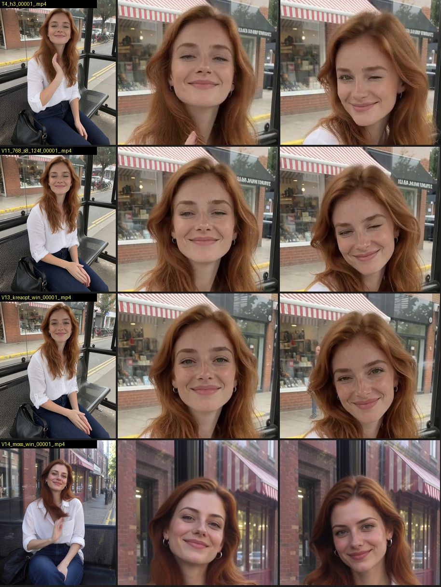
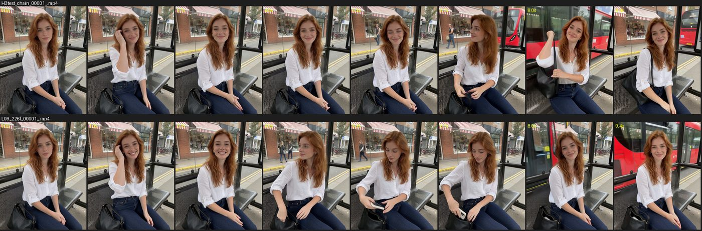
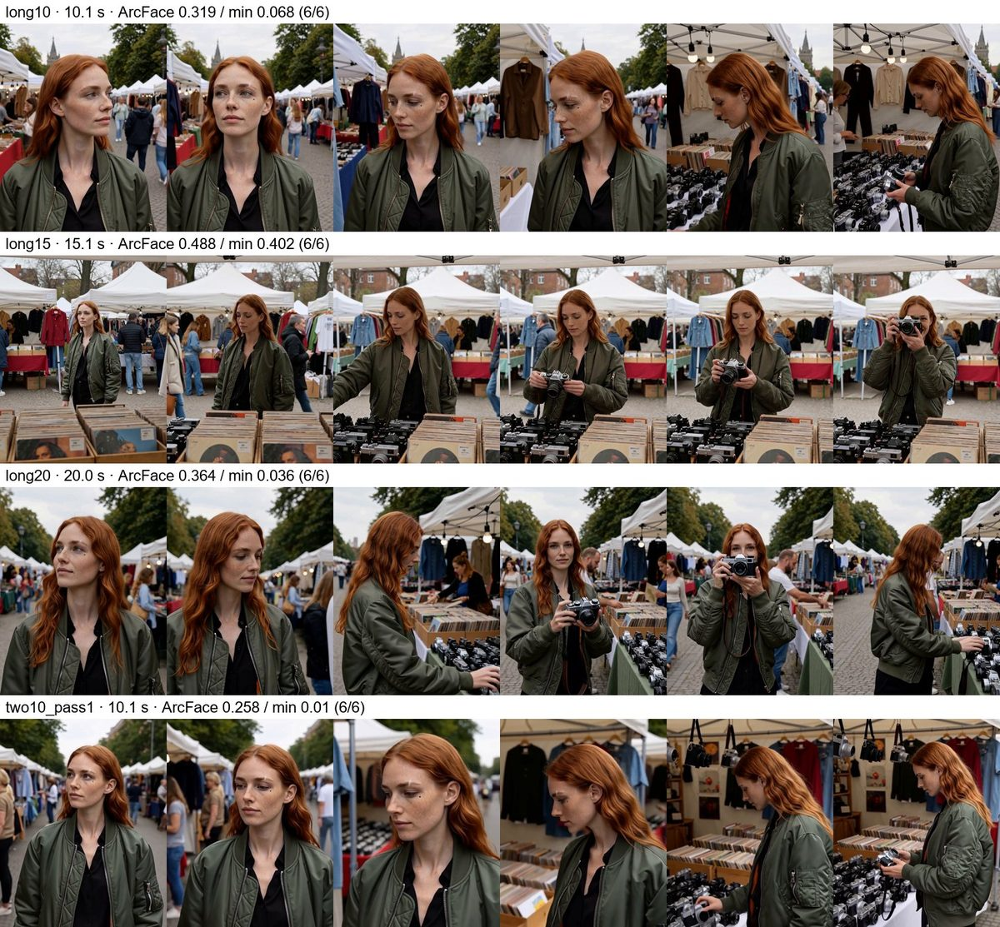
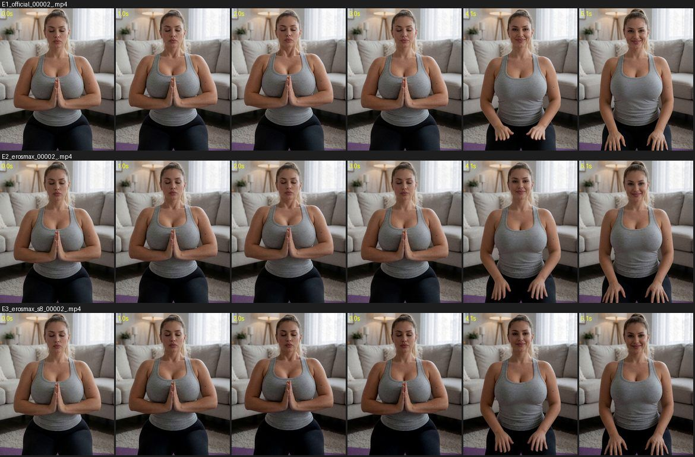

Как оживить кадр в ролик со звуком: какие настройки дали лучший результат, сколько секунд выдерживает компьютер с 16 ГБ видеопамяти и как склеивать длинные сцены.
Обновление 24.10.2026: времена ниже из серии 0. С SageAttention и турбо-LoRA на 4 шага тот же 5-секундный ролик считается за 64 с — глава «Скорость и качество».
Итог: FINAL_V13_post_00001-audio.mp4 · 1536×1920 · 48 fps · 5 с · пик VRAM 15,5 ГБ · пик RAM 58,6 ГБ
В роликах есть звук, его генерирует сама H3 по строке overall_soundscape. Включите его в плеере.

Один и тот же первый кадр и сид. Время включает загрузку моделей. Пик VRAM везде 15,5–15,9 ГБ, пик RAM 58–60 ГБ.
| # | Изменение | Размер · длина | Время | Вывод |
|---|---|---|---|---|
| V1 | базовая: турбо 8 шагов, euler, shift 12 | 640×800 · 3 с | 66 с | работает, детали мелкие теряются |
| V2 | sampler res_multistep | 640×800 · 3 с | 73 с | ≈ euler, разницы нет |
| V3 | разрешение 768×960 | 768×960 · 3 с | 105 с | заметно больше деталей лица |
| V4 | 124 кадра | 640×800 · 5 с | 117 с | 5 с работают без проблем |
| V5 | без турбо, 20 шагов | 640×800 · 3 с | 122 с | стабильно, но действия вялые |
| V6 | короткий простой промпт | 640×800 · 3 с | 66 с | хуже всех: лицо плывёт, действия пропадают |
| V7 | shift 8 | 640×800 · 3 с | 69 с | самый резкий, подмигивание есть |
| V8 | shift 16 | 640×800 · 3 с | 67 с | мягче, чем 8 |
| V10 | 768 + без турбо, 20 шагов | 768×960 · 3 с | 202 с | вдвое дольше, не лучше турбо |
| V11 | 768 + shift 8 + 124 кадра | 768×960 · 5 с | 185 с | лучшая комбинация настроек |
| V12 | 896×1120 + shift 8 | 896×1120 · 3 с | 126 с | работает, VRAM 15,5 ГБ |
| V13 | V11 + первый кадр из оптимизированного Krea | 768×960 · 5 с | 165 с | победитель |
| V14 | V11 + первый кадр из MOSS | 768×960 · 5 с | 162 с | очень мыльно |
Те же настройки победителя (768×960, турбо 8 шагов, shift 8), длинные раскадровки, одно действие на 1,5–2,5 с. По правилу ноды число кадров должно быть 17k+5, обученный диапазон H3 — 124–362 кадра (5–15 с).
| Длина | Кадров | Время | с расчёта / 1 с видео | RAM | Резкость начало / середина / конец | Вывод |
|---|---|---|---|---|---|---|
| 5 с | 124 | 165 с | 33 | 58,6 ГБ | 1010 / 932 / 957 | эталон |
| 6 с | 141 | 219 с | 36 | 54,3 ГБ | 972 / 683 / 732 | все действия |
| 9 с | 226 | 434 с | 48 | 55,7 ГБ | 946 / 724 / 712 | лучшее соотношение качества и времени |
| 12 с | 294 | 694 с | 57 | 59,4 ГБ | 1062 / 811 / 869 | все действия; практический локальный предел |
| 15 с | 362 | 956 с | 63 | 58,8 ГБ | 1145 / 1017 / 399 | фон плывёт, конец мыльный |

03c. Последние 22 кадра и звук предыдущего клипа ставятся якорем (нода MiniMaxH3AddGuide) в начало нового. Перекрытие обрезается, части склеиваются в один mp4. Результат можно подать на вход снова.03); 10–12 с — один клип (03b) или две части; больше 12 с — цепочка частей по 5–8 с через 03c или один клип в облаке (раздел ниже).Локальный предел — 12 с. Что ограничивает: видеокарта или память? В серии 12 мы сняли один сюжет на 10, 15 и 20 с на арендованной RTX PRO 6000 (96 ГБ видеопамяти, 188 ГБ RAM). Рецепт персонажа — три вида лица Марен (глава «Референс»), блошиный рынок в Мауэрпарке, два бита на 5 с по правилу серии 7.
| Длина | Кадров | Время | Пик VRAM | ArcFace среднее / мин |
|---|---|---|---|---|
| 10 с | 243 | 558 с | 9,7 ГБ | 0,32 / 0,07 |
| 15 с | 362 | 1072 с | 10,2 ГБ | 0,49 / 0,40 |
| 20 с | 481 | 1760 с | 10,0 ГБ | 0,36 / 0,04 |

03c. ПРАВИЛООдетая сцена с медитацией, кадр из секции «Фигура», один сид и одна раскадровка, 768×960, 124 кадра. Eros Max beta5 — дообученный чекпойнт сообщества из образца с Civitai (int8, уже турбо) + LoRA VBVR 0.25.
| Вариант | Время | RAM | Резкость начало / середина / конец | Дрейф лица | Вывод |
|---|---|---|---|---|---|
03 официальная H3 | 174 с | 58,5 ГБ | 79 / 64 / 75 | 7 | самая резкая, все действия |
05 Eros Max | 171 с | 59,3 ГБ | 56 / 44 / 50 | 7 | на ≈30 % мягче, «пластиковое» сглаживание |
05 + shift 8 | 159 с | 58,8 ГБ | 61 / 52 / 57 | 13 | shift возвращает треть резкости; дорисовал кольцо |

03. Eros Max не быстрее и мягче. Его единственный плюс — анатомия, которую официальная H3 размазывает.05 теперь по умолчанию shift 8. Старая версия сохранена как 05_video_h3_erosmax_i2v_baseline.fused fingers, missing fingers.Для ИИ-агентов: эта глава в Markdown · llms.txt